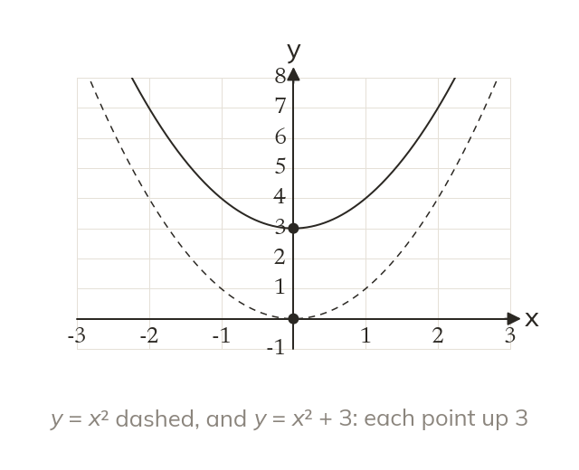
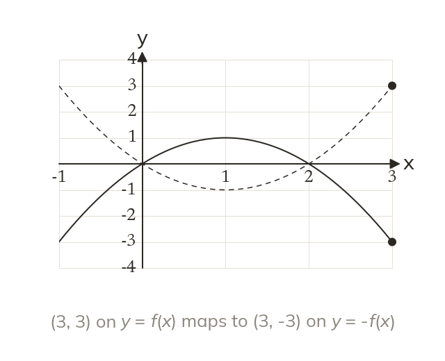
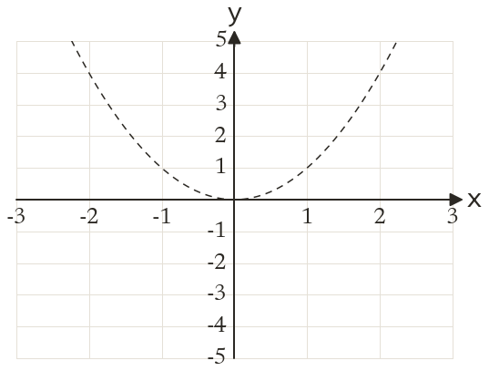
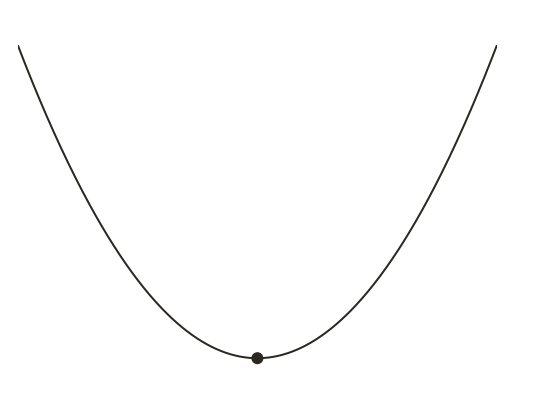
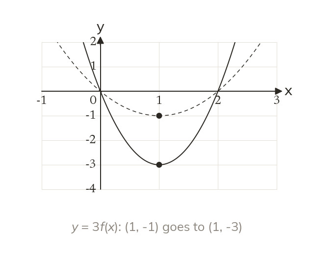
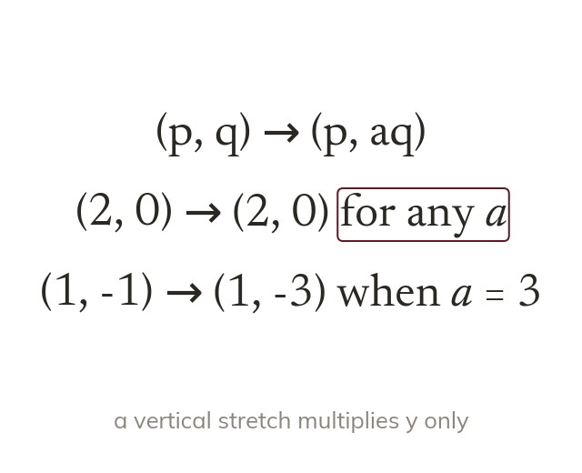
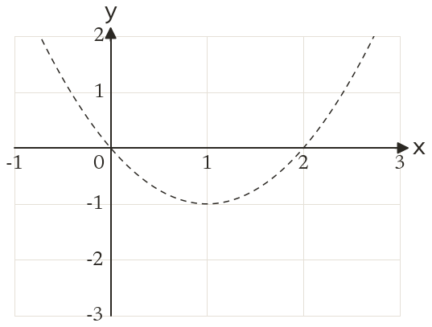
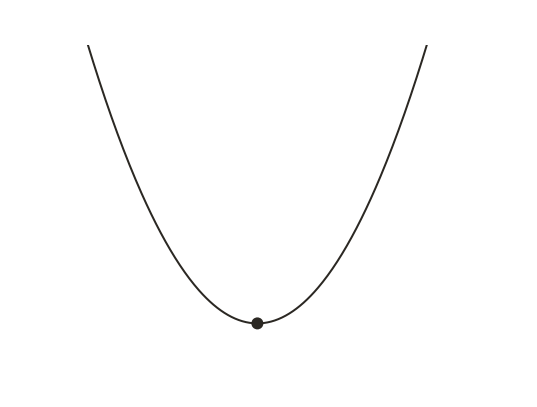

Outside acts on outputs
Adding a outside the bracket adds a to every output. So + a moves the graph up a. Every stays put.
A graph can be moved, stretched or flipped without plotting it again, just by changing its equation. Today: changes outside the bracket, which act on the outputs and move a graph up and down.
Work down the page at your own pace. Write every answer in your book first, then click to check it.
Read each card, then follow the worked examples one step at a time.

Adding a outside the bracket adds a to every output. So + a moves the graph up a. Every stays put.

A minus outside the bracket changes the sign of every output. So is a reflection in the x-axis.


Pick an answer. If it's wrong, the feedback tells you which mistake it was.
Read each card, then follow the worked examples one step at a time.

Multiplying outside the bracket multiplies every output. So = af(x) is a vertical stretch, scale factor a.

A point on the x-axis has output and
So a vertical stretch never moves a root.


Pick an answer. If it's wrong, the feedback tells you which mistake it was.
Finished? Next lesson: 11H.9.10 Horizontal Graph Transformations.
Log in, then search for a code to practise that skill.
Videos, worksheets and more on each part of this lesson.